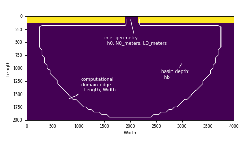
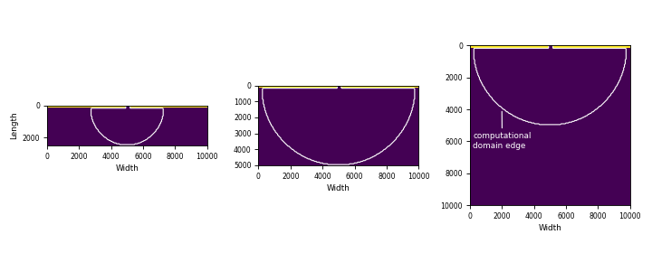
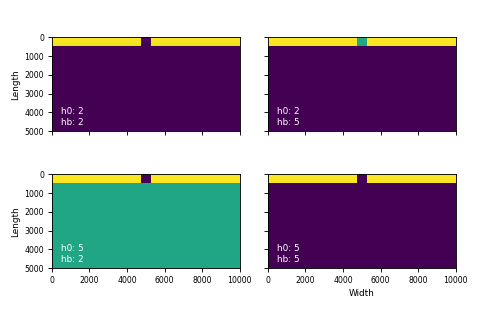
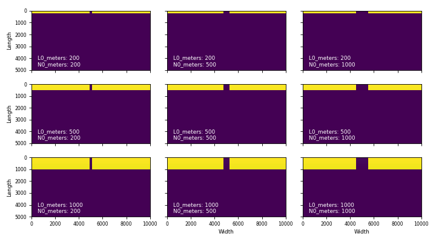

Initialization¶
There are many built-in parameters for setting up pyDeltaRCM runs.
Domain configuration¶
The domain configuration is controlled by a series of input configuration parameters. Conceptually, we can consider the domain of pyDeltaRCM to be made up of an inlet along the top edge of the model domain and bounded by a strip of land, and the basin.
{kind=link}
{kind=link}

By default, the basin and inlet are both flat and have the same depth. However these characteristics can be controlled by a variety of input parameters explained below. Moreover, any complex initial geometry can be configured by the use of hooks; see an example here Slightly sloping basin.
Domain size¶
The domain size is controlled by the Length and Width YAML parameters.
{kind=link}
{kind=link}

Hint
The size of the computational domain is determined by the size of the smallest size of the domain. The value for Width should almost always be 2 times Length to minimize unecessary calcualtions outside the valid computational domain.
Importantly, the number of cells in the domain is then a function of the domain size in meters and the grid spacing dx.
Because the number of grid cells is inverse nonlinearly related to the grid spacing (\(numcells = 1/dx^2\)), the model runtime is sensitive to the choice of dx relative to Length and Width.
Basin depth and inlet depth¶
Inlet depth is controlled by h0.
If no argument is given in the configuration for the parameter hb, then the basin depth is determined to be the same as the inlet depth.
However, these depths can be controlled independently.
{kind=link}
{kind=link}

Inlet width and length¶
The inlet length and width are controlled by an inlet length parameter L0_meters and an inlet width parameter N0_meters.
In implementation, the input length and width are rounded to the nearest grid location (a function of dx).
{kind=link}
{kind=link}

Input water and sediment¶
The input flow velocity is determined by u0.
The input water discharge is thus fully constrained by the inlet geometry and the inlet flow velocity as:
Hint
Keep in mind that \(N_0\) is specified in meters as N0_meters in the input configuration. Ditto for the inlet length (L0_meters).
Input sediment discharge is then determined by a percentage concentration of sediment in the flow C0_percent.
The volume of each parcel of water to be routed is then determined by the total water discharge divided by the number of parcels Np_water.
The volume of each parcel of sediment to be routed is then determined by the total sediment discharge divided by the number of parcels Np_sed.
The number of sand and mud parcels are then determined as Np_sed times f_bedload and Np_sed times (1-f_bedload), respectively.